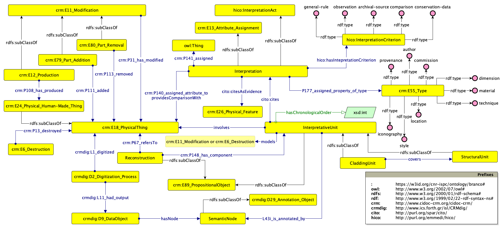

BranCO (Brancacci Chapel Ontology) is an ontology for management of heterogeneous data and the reconstruction of historical sites and artworks which is based on the intepretative unit. This concept is defined as an adaptation of the stratigraphic unit beyond the context of archaeological excavation.
It is aligned with CIDOC-CRM (v.7.1.3) and CRMDig (v.3.2.1) and it uses specific classes of the Historical Context Ontology (HICO).
The ontology has been developed following the SAMOD protocol: see the reference GitHub Repository for the material produced during the SAMOD iterations.
The ontology is a project of the CNR Institute of Heritage Science - Digital Heritage and Innovation Lab, Florence, Italy.
IRI: https://w3id.org/cnr-ispc/ontology/branco#CladdingUnit
IRI: http://www.ics.forth.gr/isl/CRMdig/D2_Digitization_Process
IRI: http://www.ics.forth.gr/isl/CRMdig/D9_Data_Object
IRI: http://www.cidoc-crm.org/cidoc-crm/E6_Destruction
IRI: https://w3id.org/cnr-ispc/ontology/branco#Interpretation
crm:E55_Type) are associated to a cultural
object or site on the basis of a scientific analysis, relying on different sources and supported by
several criteria.IRI: http://purl.org/emmedi/hico/InterpretationCriterion
IRI: https://w3id.org/cnr-ispc/ontology/branco#InterpretativeUnit
crm:6_Destruction) or modification (crm:E11_Modification and
its subclasses) on a physical object.IRI: http://www.cidoc-crm.org/cidoc-crm/E11_Modification
IRI: http://www.cidoc-crm.org/cidoc-crm/E79_Part_Addition
IRI: http://www.cidoc-crm.org/cidoc-crm/E80_Part_Removal
IRI: http://www.cidoc-crm.org/cidoc-crm/E26_Physical_Feature
IRI: http://www.cidoc-crm.org/cidoc-crm/E18_Physical_Thing
IRI: http://www.cidoc-crm.org/cidoc-crm/E12_Production
IRI: https://w3id.org/cnr-ispc/ontology/branco#Reconstruction
IRI: https://w3id.org/cnr-ispc/ontology/branco#SemanticNode
IRI: https://w3id.org/cnr-ispc/ontology/branco#StructuralUnit
IRI: http://www.cidoc-crm.org/cidoc-crm/E55_Type
IRI: http://www.cidoc-crm.org/cidoc-crm/P111_added
IRI: http://www.cidoc-crm.org/cidoc-crm/P141_assigned
IRI: http://www.cidoc-crm.org/cidoc-crm/P140_assigned_attribute_to
IRI: http://www.cidoc-crm.org/cidoc-crm/P177_assigned_property_of_type
IRI: http://purl.org/spar/cito/cites
IRI: http://purl.org/spar/cito/citesAsEvidence
crm:E26_Physical_Feature) which supports an assertion of a property to the studied
crm:E18_Physical_Thing, as in style recognition (see individual :style).IRI: https://w3id.org/cnr-ispc/ontology/branco#covers
IRI: http://www.cidoc-crm.org/cidoc-crm/P13_destroyed
IRI: http://www.cidoc-crm.org/cidoc-crm/P148_has_component
IRI: http://purl.org/emmedi/hico/hasInterpretationCriterion
IRI: http://www.cidoc-crm.org/cidoc-crm/P31_has_modified
IRI: https://w3id.org/cnr-ispc/ontology/branco#hasNode
IRI: http://www.cidoc-crm.org/cidoc-crm/P108_has_produced
IRI: https://w3id.org/cnr-ispc/ontology/branco#involves
crm:E6_Destruction or crm:E11_ModificationIRI: http://www.ics.forth.gr/isl/CRMdig/L1_digitized
IRI: http://www.ics.forth.gr/isl/CRMdig/L11_had_output
IRI: http://www.ics.forth.gr/isl/CRMdig/L43i_is_annotated_by
IRI: https://w3id.org/cnr-ispc/ontology/branco#models
crm:E6_Destruction or crm:E11_Modification on a physical thing: this
property allows to link an interpretative unit to one of these processesIRI: http://www.cidoc-crm.org/cidoc-crm/P2_has_type
IRI: https://w3id.org/cnr-ispc/ontology/branco#providesComparisonWith
IRI: http://www.cidoc-crm.org/cidoc-crm/P67_refers_to
IRI: http://www.cidoc-crm.org/cidoc-crm/P113_removed
IRI: https://w3id.org/cnr-ispc/ontology/branco#hasChronologicalOrder
IRI: https://w3id.org/cnr-ispc/ontology/branco#archival-source
hico:InterpretationCriterion): the consultation of archival documentsIRI: https://w3id.org/cnr-ispc/ontology/branco#author
crm:E39_Actor or
its subclasses).IRI: https://w3id.org/cnr-ispc/ontology/branco#commission
crm:E39_Actor or its subclasses).IRI: https://w3id.org/cnr-ispc/ontology/branco#comparison
hico:InterpretationCriterion): the comparison with similar objects (they can be
asserted via :providesComparisonWith)IRI: https://w3id.org/cnr-ispc/ontology/branco#diagnostic-data
hico:InterpretationCriterion): scientific evidence derived from diagnostic data
acquired through physico-chemical analysesIRI: https://w3id.org/cnr-ispc/ontology/branco#dimension
crm:E54_Dimension. The numerical value can be asserted also as an
xsd:float, as indicated in Implementing the CIDOC Conceptual
Reference Model in RDF, v.1.0).IRI: https://w3id.org/cnr-ispc/ontology/branco#general-rule
hico:InterpretationCriterion): general rules (such as the proportion in the dimensions
of temples in Greco-Roman architecture)IRI: https://w3id.org/cnr-ispc/ontology/branco#iconography
:Interpretation crm:P141_assigned crm:E36_Visual_Item. With this axiom, this conceptual
model is interoperable with the VIR - Visual
Representation Ontology and the class IC9 Representation, which is in turn
subclass of crm:E36_Visual_Item.
Association of an iconography to an Iconclass concept can be asserted as crm:E36_Visual_Item
crm:P48_has_preferred_identifier crm:E42_IdentifierIRI: https://w3id.org/cnr-ispc/ontology/branco#location
crm:E53_Place, with specifications
asserted via crm:P157_is_at_rest_relative_to)IRI: https://w3id.org/cnr-ispc/ontology/branco#material
crm:E57_Material)IRI: https://w3id.org/cnr-ispc/ontology/branco#observation
hico:InterpretationCriterion): direct observation of the studied objectIRI: https://w3id.org/cnr-ispc/ontology/branco#provenance
crm:E39_Actor or its subclasses).IRI: https://w3id.org/cnr-ispc/ontology/branco#style
:Interpretation cito:citesAsEvidence crm:E26_Physical_Feature
In CIDOC CRM style, i.e. "a style applicable to all paintings sharing the characteristics of the
works produced by the Impressionist painters, regardless of historical context", defines
morphological object types that fall under E55 Type" (from CIDOC CRM documentation, v. 7.1.3, class
crm:E4_Period, fifth paragraph).IRI: https://w3id.org/cnr-ispc/ontology/branco#technique
crm:E55_Type)IRI: http://purl.org/dc/elements/1.1/contributor
This HTML document was obtained by processing the OWL ontology source code through LODE, Live OWL Documentation Environment, developed by Silvio Peroni .